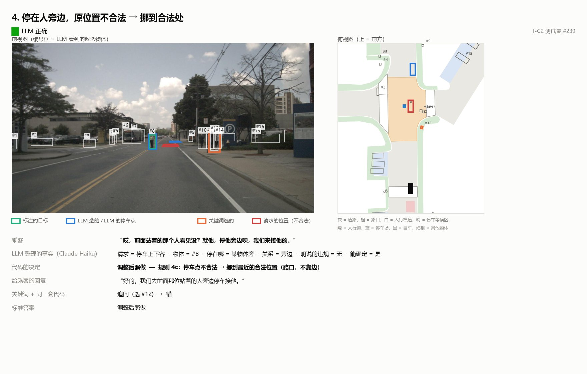

一个测试案例：LLM 找到乘客说的那个人（#8）；代码发现那个位置不能停车，把停车点移到了合法位置。
重点项目
个人项目 · 2026 年 10–11 月
DriveAgent：LLM 在驾驶智能体里到底哪里有用？
在 nuScenes 驾驶数据集上搭建一个会调用工具的 LLM 智能体，规划 3 秒轨迹、处理乘客指令，并和更简单的方法对比。每项测试只跑一次，规则事先写定。
乘客指的是哪个物体？（397 条指令，%）
关键词规则
53.1
零样本 CLIP
68.5
LLM + 相机图像
81.6
- LLM 负责把请求整理成结构化信息，确定性代码执行地图规则：286 条请求正确率 89.9%，比 LLM 单独决策高约 20 个百分点。
- 不确定时系统会先询问而不是乱猜：在 148 条新指令上，"不吭声地做错"从 44.6% 降到 8.8%。
- 轨迹规划上，18 个特征的 MLP 在 6,019 帧上 L2 误差 0.609 m，LLM 没有带来可靠提升；给它参考轨迹时，200 帧中有 197 帧直接照抄。